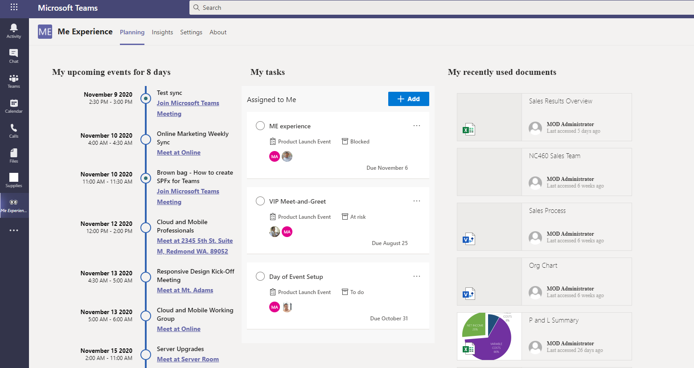
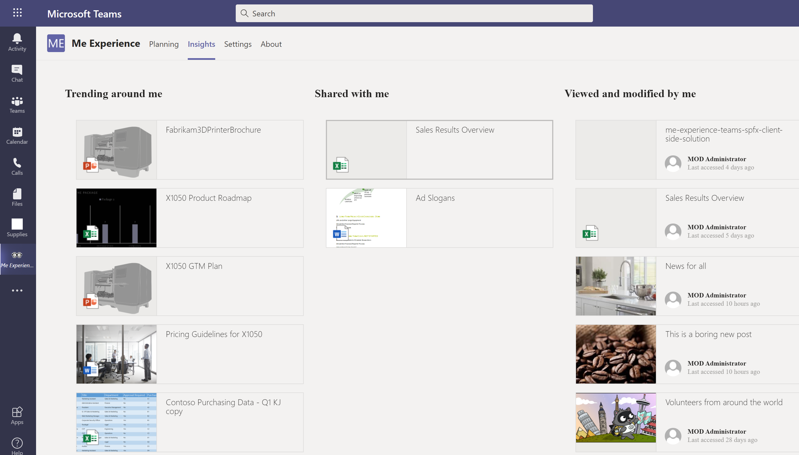
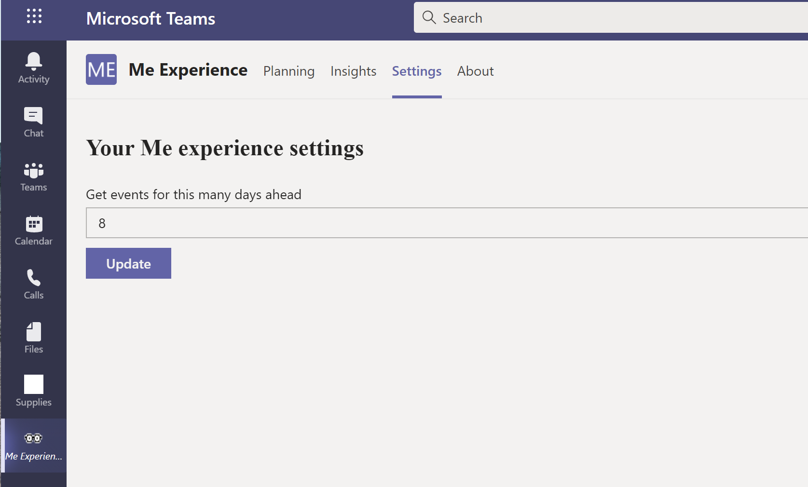
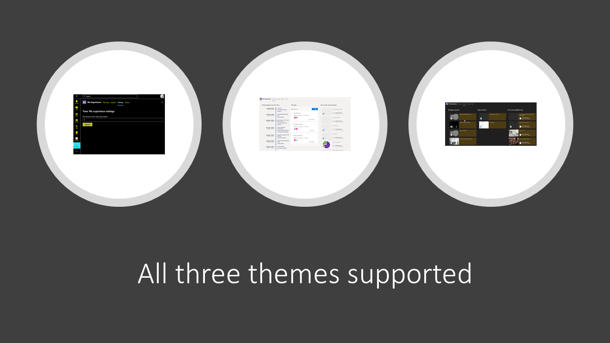

Me Experience in Microsoft Teams using Microsoft Graph Tookit and SPFx
Published on 09/11/2020
Create the Me Experience as explained in the blog by Waldek Mastykarz using Microsoft Graph Tookit with React and SPFx
This blog is a short walkthrough of the sample created for the Me Experience with the Combine multiple web parts in a single tab of a personal Teams app approach
The sample covers:
- Microsoft Graph Open Extensions
- Microsoft Graph Tookit with React
- Build Microsoft Teams tab using SPFx
The finished app

Personal App for Me Experience
The sample gives you 3 tabs for a Personal App in Microsoft Teams, using mgt-react package for components
- Planning
- Insights
- Settings
Planning
Uses Agenda, Tasks, and Get components from Microsoft Graph Tookit with React
MGT-Files are coming and can replace the custom File component used here in combination with Get to simplify things further. But we don't know when but fingers crossed 🤞🏽
Here is the Planning tab.

Insights
Uses Get component from Microsoft Graph Tookit with React
Here is the Insights tab.

Settings
Personal Apps in Teams do not have configuration settings as in a regular SPFx webpart. And often we might want to configure few things.
For e.g here , the app shows me my upcoming meetings for the next 8 days, may be I want to see it for just the next 5 days then I should be able to configure this.
For this personalised configuration, we have a variety of option, you can see here Here we have used Microsoft Graph Open Extensions
Right now it only has one setting, the number of days passed to the Agenda component to bring back events, but we will be upgrading this to more as the need arise.

Microsoft Graph Toolkit
The way things have been simplified by the MG Toolkit is worth mentioning. This is my code for the planning tab below. You can see the simplicity in it and how well Microsoft Graph Toolkit let's you extend it's components with templating.
<Customizer settings={{ theme: this.props.themeVariant }}>
<div className={styles.planning}>
<div className={styles.felxColumn} >
<div className={styles.webpartTitle}>My upcoming events for {days} days</div>
<Agenda showMax={7} days={days}>
<MgtEvent template="event" />
</Agenda>
</div>
<div className={styles.felxColumn} >
<div className={styles.webpartTitle}>My tasks</div>
<Tasks data-source="todo"></Tasks>
</div>
<div className={styles.felxColumn}>
<div className={styles.webpartTitle}>My recently used documents</div>
<Get resource="me/insights/used?filter=resourceVisualization/containerType eq 'Site'" maxPages={1} >
<Files template="default" userLoginName={loginName} userDisplayName={displayName} />
</Get>
</div>
</div>
</Customizer>
For File, I have used the Get component with custom template called Files.
I have passed the default api response value to my template and have manipulated it as needed.
Themes
The app respects themes chosen by users whether in Teams thanks to this article by Joao Mendez a lot of work was simplified for this sample , kudos to you 👏🏽

Sample code
The complete source code is now available in my personal Github repo but will be soon available in PnP Teams Samples. Waiting for the PR to be approved 🚀